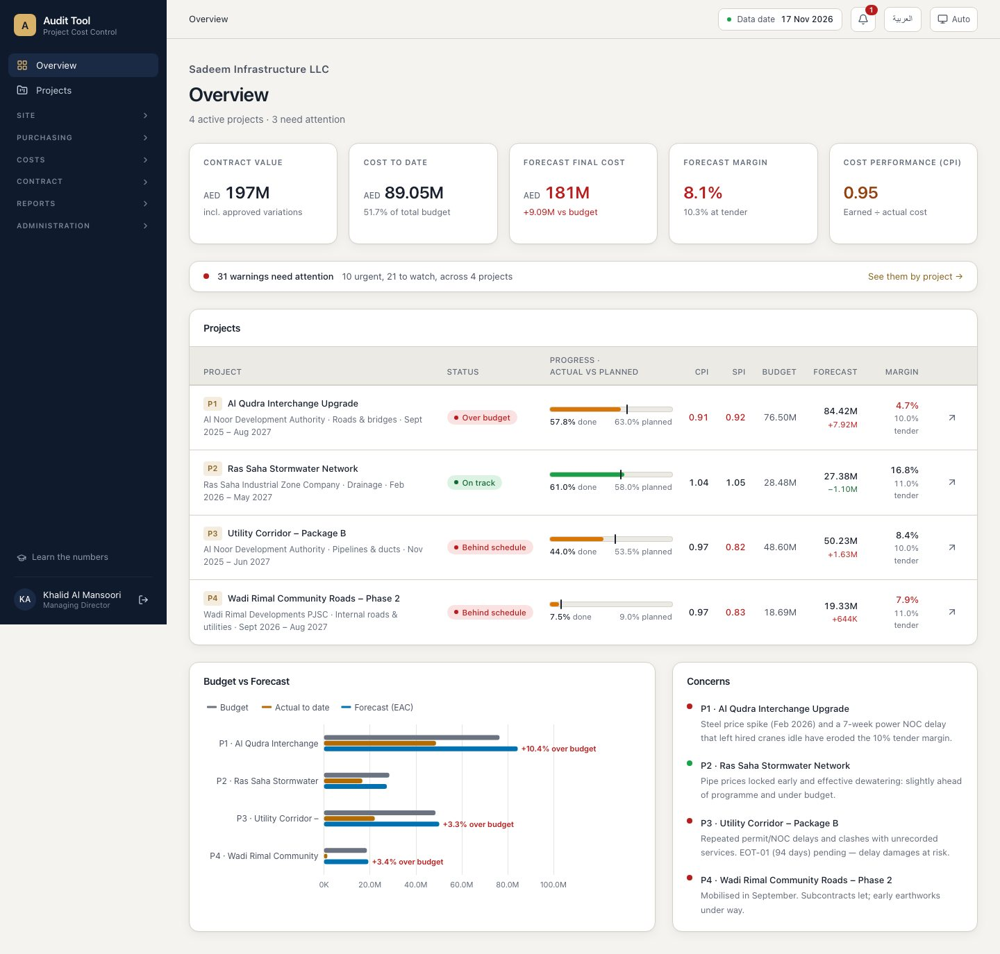
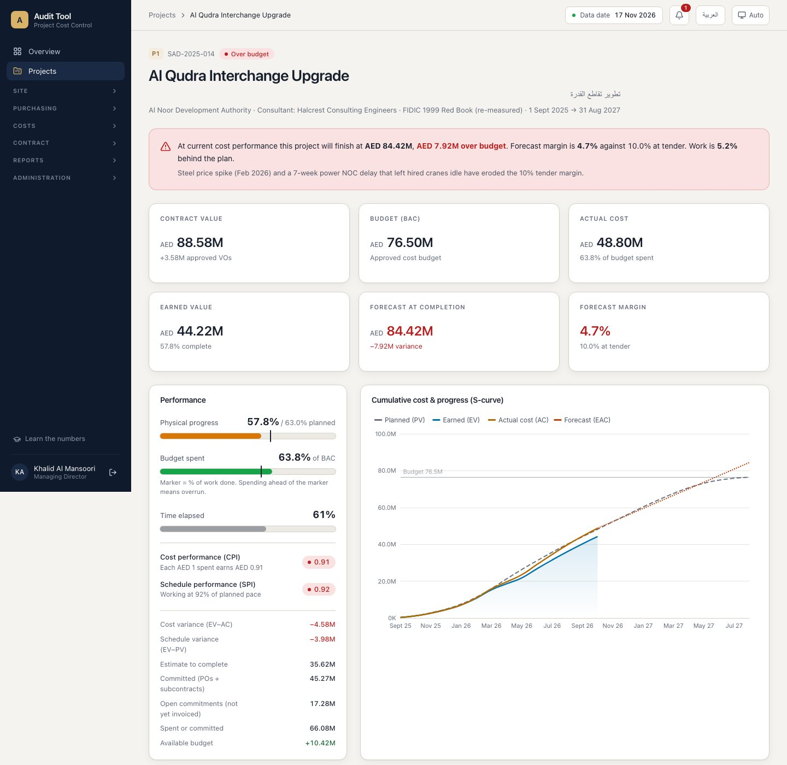
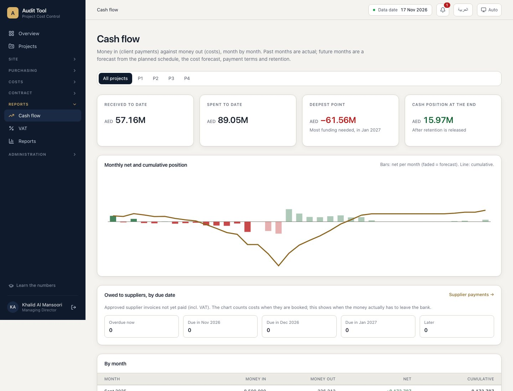
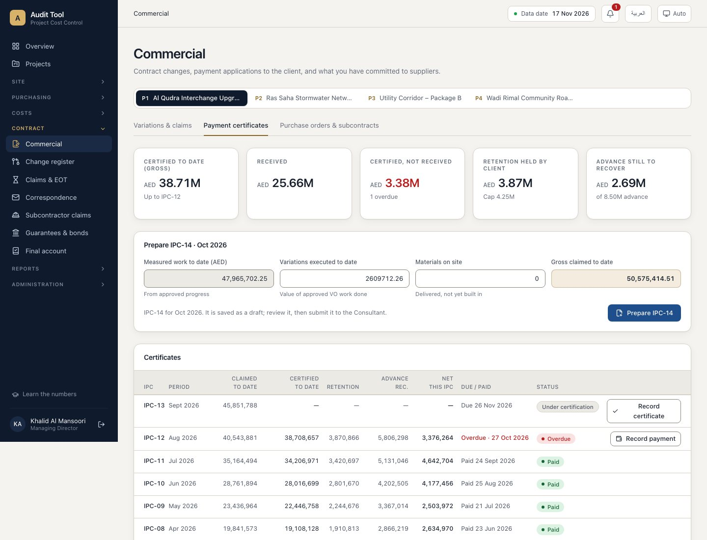
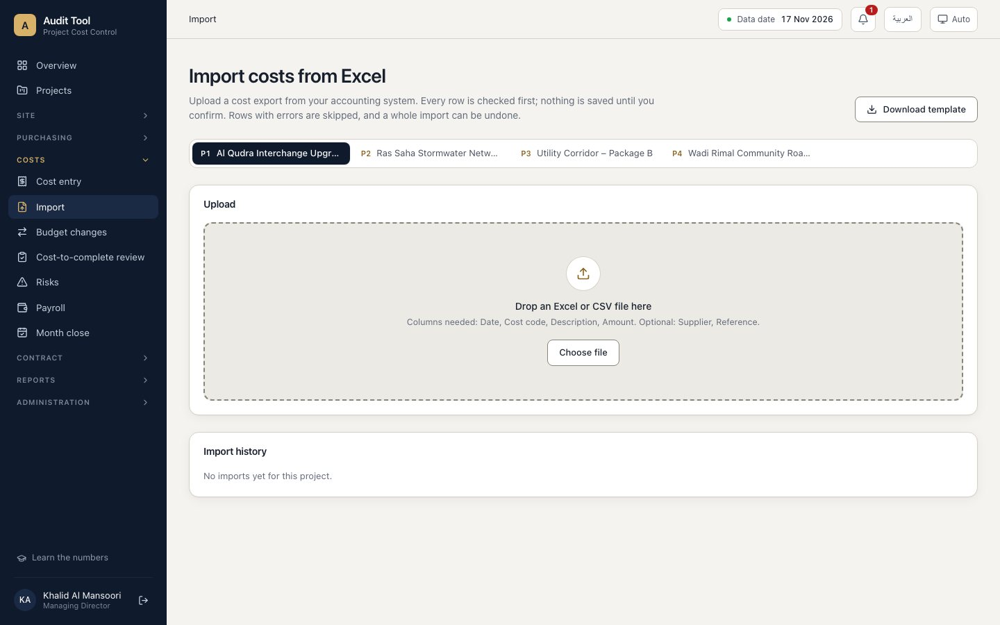
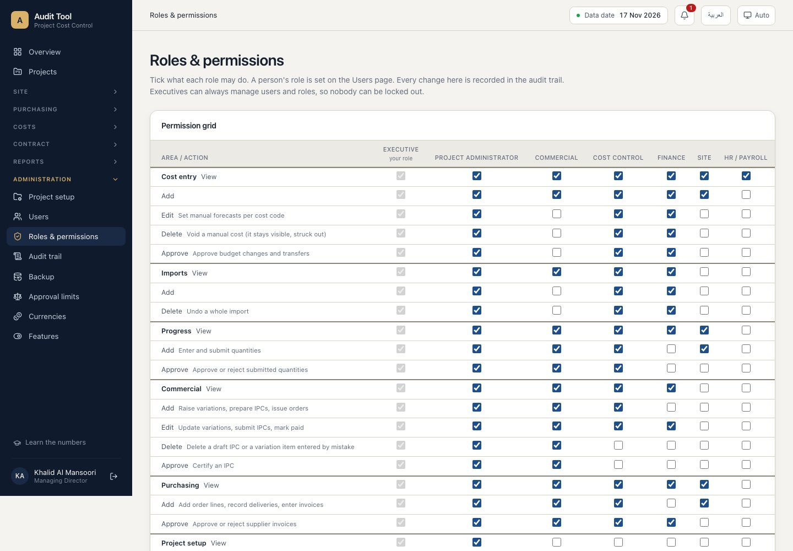
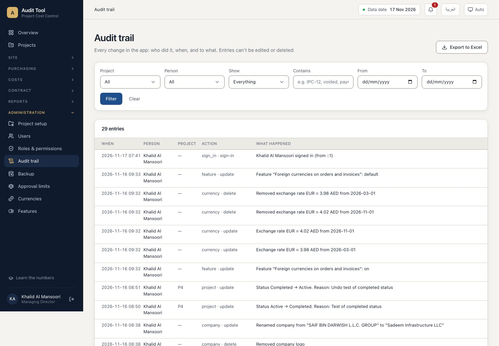
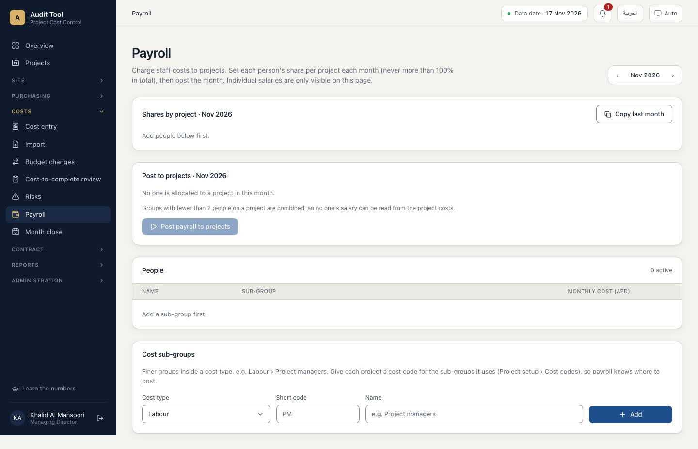

Portfolio overview: four projects, warnings and budget against forecast. All data is fictional.
The problem
On a construction contract, the margin can disappear months before anyone notices. Costs sit in the accounting system, progress in site reports, variations and payment certificates in the commercial team's spreadsheets. By the time they are put together at month end, it is too late to act.
Audit Tool brings costs, progress, commercial and cash data together per project and keeps earned value (CPI, SPI, forecast final cost and margin) up to date, so management sees which projects need attention and why.
What it does
Portfolio and project dashboards
Contract value, cost to date, forecast final cost, margin and CPI/SPI per project. Also an S-curve, cost by type, the largest forecast overruns and a work breakdown.
Costs and imports
Manual cost entry and Excel/CSV imports from the accounting system, with every row checked before saving and whole imports that can be undone.
Commercial control
Variations and claims, extension-of-time claims, interim payment certificates (IPCs) with retention and advance recovery, subcontractor claims, guarantees and the final account.
Purchasing and materials
Quotation comparison, purchase orders, a three-way match of order, delivery and invoice, and material checks against the bill of quantities.
Cash flow and reports
Monthly money in against money out with a forecast, VAT, month close with snapshots, and reports.
Site and schedule
Site diary with safety statistics (LTIFR), permits with expiry alerts, documents and RFIs, and a Primavera P6 (.xer) schedule reader.
Payroll with privacy
Staff costs shared across projects under a 100% rule, with individual salaries hidden from project users.
Administration
Roles and permissions grid, approval limits, currencies, feature switches, backup and a full audit trail of who changed what.
How it is built
Modular monolith
One app and one database split into modules with a single front door each. Lint rules and an architecture test block any import that crosses a boundary before deploy.
Tested business rules
The EVM, payment certificate, payroll and cash-flow maths are pure functions covered by 180+ Vitest tests. CI runs a typecheck, tests, lint, a dependency vulnerability audit and a production build on every push.
Security and governance
Personal accounts only, two-step sign-in (TOTP) for administrators and approvers, and automatic deactivation on a leaver's last day. Also a network allowlist, approval limits, and an append-only audit trail exportable to Excel.
Ready to deploy two ways
On Vercel with Neon Postgres, or on the company's own Linux server with nginx, systemd timers, encrypted nightly backups with a restore test, and written security, incident-response and on-premise guides.
Tech stack
- Next.js 16
- React 19
- TypeScript
- Drizzle ORM
- PostgreSQL
- PGlite
- Tailwind CSS 4
- ECharts
- ExcelJS
- Vitest
- GitHub Actions
- Vercel
- nginx
- systemd
Screens
Click any screen to open it full size. All companies, people and figures are fictional.







My role
I designed and built the whole app on my own as a side project: I defined the business rules for earned value, payment certificates and cash flow, built the modular architecture and database schema with migrations, and wrote the test suite and CI pipeline. I also seeded a realistic fictional portfolio to test against, and wrote the deployment, security and user guides.